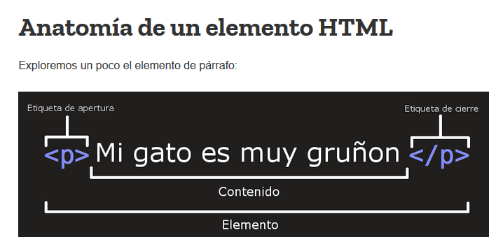
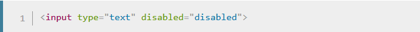
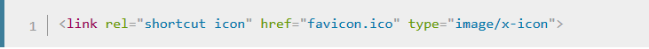
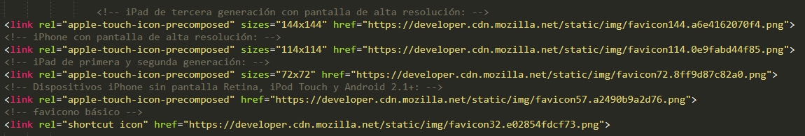
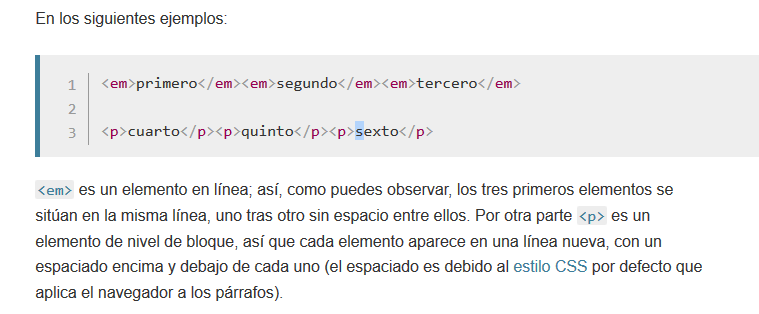
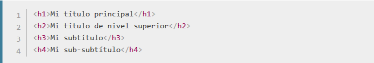

Introducción a HTML
En su corazón, HTML es un lenguaje muy sencillo compuesto de elementos, que pueden ser aplicados a piezas de texto para darles un significado diferente en un documento (¿Esto es un párrafo? ¿Esto es una lista con viñetas? ¿Esto es parte de una tabla?), estructura un documento en secciones lógicas (¿Tiene una cabecera? ¿Tres columnas de contenido? ¿Un menú de navegación?) e incrusta contenido como imágenes y vídeos en una página. Este módulo introducirá los dos primeros de estos, e introduce conceptos fundamentales y la sintaxis que necesitas para entender HTML.
¿Qué es el HTML?
El HTML (HyperText Markup Language o lenguaje de marcas de hipertexto) no es un lenguaje de programación, es un lenguaje de marcado, usado para decirle a tu navegador cómo estructurar la páginas que visitas. Puede ser tan complejo o tan simple como desee el desarrollador web. El HTML consiste en una serie de elementos, que puedes utilizar para encerrar, delimitar o marcar partes diferentes del contenido para hacer que aparezcan de una cierta manera, o actúen de forma determinada. Las etiquetas que delimitan un fragmento de contenido pueden hacer que dicho contenido enlace con otra página, ponga una palabra en cursiva, etcétera. Por ejemplo, dada la siguiente línea de contenido:
Las partes principales de nuestro elemento son:
El elemento: lo conforman la suma de la etiqueta de apertura, la etiqueta de cierre y el contenido.
Atributos
Los elementos pueden también tener atributos, que se ven así:

Los atributos contienen información adicional acerca del elemento, la cual no quieres que aparezca en el contenido real del elemento. Aquí class es el nombre del atributo y editor-note el valor del atributo. En este caso, el atributo class permite darle al elemento un nombre identificativo, que se puede utilizar luego para apuntarle al elemento información de estilo y demás cosas.
Un atributo debe tener siempre:
Los atributos siempre se incluyen en la etiqueta de apertura de un elemento, nunca en la de cierre.
Nota: el atributo con valores simples que no contengan espacios en blanco ASCII (o cualesquiera de los caracteres " ' ` = < >) pueden permanecer sin entrecomillar, pero se recomienda entrecomillar todos los valores de atributo, ya que esto hace que el código sea más consistente y comprensible.
Añadir atributos a un elemento
Otro ejemplo de un elemento es <a>, que significa ancla, y creará un hipervínculo en la parte del texto que quede encerrado entre las etiquetas. Puede tener una serie de atributos entre los que se encuentran los siguientes:
Atributos booleanos
En ocasiones puedes ver atributos escritos sin valores. Esto está permitido. Se denominan atributos booleanos y pueden tener únicamente un valor, que como norma general es el mismo que el nombre del atributo. Por ejemplo, el atributo disabled que se puede asignar a elementos de entrada de formularios si se desea desactivarlos para que el usuario no pueda introducir datos en estos.
De manera abreviada, también es posible escribirlo como se describe a continuación (además, se ha incluido un elemento de entrada de formulario no desactivado como referencia, para dar una idea más precisa de lo que sucede):

Omitir comillas en valores de atributos
Cuando observas diferentes páginas web, puedes encontrarte con todo tipo de estilos de etiquetado extraños, que incluyen valores de atributos sin comillas. Esto se permite en ciertas circunstancias, pero interrumpirá la edición en otras. Por ejemplo, si volvemos a revisar el ejemplo de enlace, sería posible escribir una versión básica con solo el atributo href, como este:

Sin embargo, las cosas no funcionarán cuando a este estilo se añada el atributo title:

En este punto el navegador interpretará mal el cambio y pensará que el atributo title corresponde a tres atributos: un atributo title con el valor La y dos atributos booleanos: página web de y Mozilla. Obviamente, esto no es lo que se desea, porque causa errores o un comportamiento inesperado en el código, como se observa en el ejemplo siguiente. Mantén el cursor sobre el enlace para ver qué muestra el texto del título.
Se aconseja incluir siempre las comillas de los atributos para evitar este tipo de problemas y producir un código más legible.
¿Comillas simples o dobles?
En este artículo todos los atributos se han incluido en comillas dobles. Sin embargo, se puede ver comillas simples en algunos HTML. Esto es un simple tema de estilo, y puedes elegir usar el tipo que prefieras. Ambas líneas de código son equivalentes.

¿Qué hay en la cabecera? Metadatos en HTML
La cabecera de un documento HTML es la parte que no se muestra en el navegador cuando se carga la página. Contiene información como el título (<title>) de la página, enlaces al CSS (si quieres aplicar estilo a tu contenido HTML con CSS), enlaces para personalizar faviconos, y otros metadatos (datos sobre el HTML, como quién lo escribió y palabras claves importantes que describen el documento). En este artículo abarcaremos todo esto y más, para darte bases sólidas en el manejo del marcado y otros códigos que deberían estar presentes en tu cabecera.
Estructura de un documento HTML

<!DOCTYPE html>: El elemento doctype. En sus inicios, cuando el HTML llevaba poco tiempo (alrededor de 1991-1992), los doctypes servían como enlaces al conjunto de reglas que la página HTML debía seguir para que fuera considerado buen HTML, lo que podía significar poder efectuar una comprobación automática de errores y otras funcionalidades útiles. Un elemento doctype de aquella época podía parecerse a esto:

En la actualidad se ignora y se considera un legado histórico que hay que incluir para que todo funcione correctamente. <!DOCTYPE html> es la secuencia de caracteres más corta que se acepta como elemento doctype válido, y esto es lo único que realmente necesitas saber.
<html></html>:: Este elemento engloba todo el contenido de la página y es conocido en ocasiones como el elemento raíz.
<head></head>:: El elemento
(cabecera). Este elemento actúa como contenedor para todos los parámetros que quieras incluir en el documento HTML que no será visible a los visitantes de la página. Incluye cosas como palabras clave y la descripción de la página que quieras mostrar en los resultados de búsqueda, así como la hoja de estilo para formatear nuestro contenido, declaraciones de codificación de caracteres y más. Aprenderás más acerca de esto en el siguiente artículo de la serie.<meta charset="utf-8">—<meta;>:. Este elemento establece el juego de caracteres que tu documento usará en utf-8, que incluye casi todos los caracteres de todos los idiomas humanos. Básicamente, puede manejar cualquier contenido de texto que puedas incluir. No hay razón para no establecerlo, y puede evitar problemas en el futuro.
<title></title>: — el elemento <title> establece el título de tu página, que es el título que aparece en la pestaña o en la barra de título del navegador cuando la página es cargada, y se usa para describir la página cuando es añadida a los marcadores o como favorita.
<body></body>: — el elemento <body>. Encierra todo el contenido que deseas mostrar a los usuarios web que visiten tu página, ya sea texto, imágenes, videos, juegos, pistas de audio reproducibles, y demás.
Añadir un título
Ya hemos visto el elemento <title> en acción: se puede usar para poner un título al documento. Sin embargo, esto puede confundirse con el elemento <h1>>, que se utiliza para poner un encabezado de nivel superior al cuerpo de tu contenido. Esto también se conoce como el título de la página. ¡Pero son cosas diferentes!Imágenes
Presta atención nuevamente al elemento imagen <img>:

Como ya se dijo antes, incrusta una imagen en la página, en la posición en que aparece. Lo logra a través del atributo src (source), el cual contiene el path (ruta o ubicación) de tu archivo de imagen.
También se incluye un atributo alt (alternative) el cual contiene un texto que debería describir la imagen, y que podría ser accedido por usuarios que no pueden ver la imagen, quizás porque:
Son ciegos o tienen deficiencias visuales. Los usuarios con impedimentos visuales usualmente utilizan herramientas llamadas Lectores de pantalla (Screen Readers), los cuales les leen el texto contenido en el atributo alt.
Se produjo algún error en el código que impide que la imagen sea cargada. Como ejemplo, modifica deliberadamente la ubicación dentro del atributo src para que este sea incorrecto. Si guardas y recargas la página, deberías ver algo así en lugar de la imagen:

Metadatos: el elemento <meta>
Los metadatos son datos que describen datos, y HTML tiene una forma «oficial» de introducir metadatos en un documento: el elemento <meta>. Por supuesto, el resto de elementos de los que hablamos en este artículo también podrían considerarse metadatos. Hay muchos tipos diferentes de elementos <meta> que se pueden incluir en el <head> de tu página, pero no vamos a intentar explicarlos todos en esta etapa porque resultaría demasiado confuso. En lugar de ello vamos a explicar algunas cuestiones con las que seguramente te vas a encontrar, solo para que te hagas una idea.
La codificación de caracteres de tu documento
En el ejemplo que hemos visto arriba había incluida esta línea:

Este elemento simplemente especifica la codificación de caracteres del documento: el conjunto de caracteres que el documento puede usar. utf-8 es un conjunto universal de caracteres que incluye casi todos los caracteres de casi cualquier idioma humano. Esto significa que tu página web podrá gestionar la visualización de cualquier idioma; por lo tanto, resulta una buena idea configurar esto en cada página web que crees. Por ejemplo, tu página podría gestionar el inglés y el japonés igual de bien:

Si en cambio estableces, por ejemplo, la configuración de caracteres ISO-8859-1 (el juego de caracteres para el alfabeto latino), la representación de tu página se arruina por completo:

Nota: Algunos navegadores (Chrome, por ejemplo) arreglan automáticamente las codificaciones de caracteres incorrectas, de modo que según el navegador que uses, puede que no te topes con este problema. Aun así, deberías incluir una codificación de caracteres utf-8 en tu página web para evitar que se presenten problemas potenciales con otros navegadores.
Aprendizaje activo: Experimenta con la codificación de caracteres
Para probar esto, vuelve a visitar la plantilla HTML simple que obtuviste en la sección anterior sobre <title> (la página title-example.html) e intenta cambiar el valor de la propiedad meta charset por ISO-8859-1 y añade el japonés a tu página. Este es el código que usamos:

Añadir un autor y una descripción
Muchos elementos <meta> incluyen atributos name y content:
name especifica el tipo de metadato del que se trata; es decir, qué tipo de información contiene.content especifica el contenido del metadato en sí.Dos de esos metadatos que resultan útiles de incluir en tu página definen al autor de la página y proporcionan una descripción concisa de la página. Veamos un ejemplo:

Especificar un autor resulta ventajoso por diversos motivos: es útil saber quién escribió la página y para poder ponerte en contacto con el autor si tienes preguntas sobre el contenido. Algunos sistemas de gestión de contenido tienen herramientas para extraer automáticamente la información del autor de la página y ponerla a disposición para tales fines.
Especificar una descripción que incluya palabras clave relacionadas con el contenido de tu página resulta útil porque tiene el potencial de hacer que la página aparezca más arriba en las búsquedas relevantes que efectúan los motores de búsqueda (tales actividades se denominan optimizaciones del motor de búsqueda (Search Engine Optimization) o SEO.)


Otros tipos de metadatos
Al navegar por la web también puedes encontrar otros tipos de metadatos. Muchas de las funciones que verás en los sitios web son creaciones propietarias diseñadas para proporcionar a ciertos sitios (como los sitios de redes sociales) información específica que puedan usar.
Por ejemplo, Open Graph Data es un protocolo de metadatos que Facebook inventó para proveer metadatos más ricos para los sitios web. En las fuentes de código de MDN, encontrarás esto:

Un efecto de esto es que cuando desde Facebook enlazas a un MDN, el enlace aparece con una imagen y una descripción, lo que resulta una experiencia más enriquecedora para los usuarios.

Twitter también tiene sus metadatos propios, que tienen un efecto similar cuando la URL del sitio se muestra en twitter.com. Por ejemplo:

Agregar iconos personalizados a tu sitio
Para enriquecer un poco más el diseño de tu sitio puedes añadir en tus metadatos referencias a iconos personalizados, que se mostrarán en determinados contextos. El más común de ellos es el favicono (abreviatura de favorite icons, icono de «favoritos», referido al uso que se le da en las listas de «favoritos» o de marcadores (bookmarks).
El humilde favicono, que existe desde ya hace muchos, muchos años, fue el primer icono de este tipo, un icono de 16 x 16 píxeles usado en múltiples sitios. Para añadir un favicono a tu página:

Los navegadores modernos usan faviconos en diversos lugares, como en la etiqueta de la página que está abierta y en el panel de favoritos cuando la añades a tu lista de páginas favoritas:

Hay en día hay un montón más de otros tipos de iconos a tener presentes. Por ejemplo, los encontrarás en el código fuente de la página de inicio de MDN:
Los comentarios explican para qué se usa cada icono (estos elementos abarcan situaciones como aportar un buen icono de alta resolución para usarlo cuando la página web se guarda en la página de inicio de un iPad).
No te preocupes demasiado sobre la implementación de todos estos tipos de iconos por el momento; se trata de una característica bastante avanzada y no se espera que tengas conocimientos de ello para avanzar en el curso. El propósito principal aquí es darte a conocer estos elementos por si te los encuentras mientras examinas el código fuente de otros sitios web.
 *Hay que entrar en este link y visitar esta pagina porque aca esta la informacion original de la pagina.
*Hay que entrar en este link y visitar esta pagina porque aca esta la informacion original de la pagina.
Elementos de bloque y elementos en línea
Hay dos categorías de elementos en HTML, que es importante que conozcas. Estos son los elementos de bloque y los elementos en línea.
Los elementos de bloque forman un bloque visible en la página; aparecerán en una línea nueva después de cualquier contenido anterior; y cualquier contenido que vaya después también aparecerá en una línea nueva. Los elementos de bloque tienden a ser elementos estructurales en la página que representan, por ejemplo, párrafos, listas, menús de navegación, pies de página, etc. Un elemento de bloque no estaría anidado dentro de un elemento en línea, pero podría estar anidado dentro de otro elemento de nivel de bloque.
Los elementos en línea son aquellos que están contenidos dentro de elementos de bloque y delimitan solo pequeñas partes del contenido del documento, no párrafos enteros ni agrupaciones de contenido. Un elemento en línea no hará aparecer una línea nueva en el documento; normalmente aparecen dentro de un párrafo o texto, por ejemplo es el caso de un elemento <a> (hipervínculo) o elementos de énfasis como <em> o <strong>.

Este elemento solo incluye los atributos globales.
Elementos vacíos
No todos los elementos siguen el patrón de arriba: etiqueta de apertura, contenido y etiqueta de cierre. Algunos elementos consisten solo en una etiqueta única, que se utiliza generalmente para insertar/incrustar algo en el documento en el lugar donde quiere incluirse. Por ejemplo, el elemento <img> inserta una imagen en la posición de la página donde quiere incluirse:

Posee un atributo, pero no hay etiqueta de cierre </img> ni contenido encerrado. Esto es porque un elemento de imagen no encierra contenido al cual afectar. Su propósito es desplegar una imagen en la página HTML, en el lugar en que aparece.

La imagen de ejemplo por medio de ese atributo es un logo de Mozilla.
Referencias a entidades: Inclusión de caracteres especiales en HTML
En HTML, los caracteres <, >,",' y & son caracteres especiales. Forman parte de la sintaxis HTML, pero ¿cómo se pueden incluir en el texto si realmente queremos hacer uso de un ampersand (&) o el signo menor que (<), y que el navegador no lo interprete como código?
Tenemos que utilizar caracteres de referencia, es decir, códigos especiales que representan caracteres. Cada carácter de referencia comienza con un signo de ampersand (&) y finaliza con un punto y coma (;).

Considera el siguiente ejemplo:

En la salida puedes ver que el primer párrafo ha salido mal porque el navegador cree que la segunda instancia de <p> comienza un párrafo nuevo. El segundo párrafo se ve bien porque hemos remplazado < y > por sus referencias correspondientes.
Comentarios HTML
En HTML, como en la mayoría de los lenguajes de programación, hay un mecanismo para escribir comentarios en el código. Los comentarios son ignorados por el navegador y son invisibles para el usuario. Su propósito es permitir comentar el código para aclarar su funcionamiento, explicar lo que hacen las diferentes partes del código, etc. Esto es muy útil como recordatorio del trabajo que has hecho si vuelves a trabajar con un código en el que no has trabajado durante meses o si entregas tu código a otra persona para que trabaje con él.
Para convertir en un comentario una sección de contenido de tu archivo HTML, debes delimitarlo con los marcadores especiales <!-- y -->, por ejemplo:

Como puedes ver a continuación, el primer párrafo aparece, pero el segundo no. El segundo parrafo es el comentario invisible en la pagina, pero visible en el documento html.
Marcado de texto
Esta sección cubrirá algunos de los elementos HTML básicos que usarás para el marcado de texto.
Encabezados
Los elementos de encabezado permiten especificar que ciertas partes del contenido son encabezados, o subencabezados del contenido. De la misma forma que un libro tiene un título principal, y que a su vez puede tener títulos por cada capítulo individual, y subtítulos dentro de ellos, un documento HTML puede tenerlos también. HTML posee seis niveles de encabezados, <h1>–<h6>, aunque probablemente solo llegues a usar 3-4 como mucho:

Párrafos
Como se explicó más arriba, los elementos <p> se utilizan para encerrar párrafos de texto; los usarás frecuentemente para el marcado de contenido de texto regular:

Listas
Mucho del contenido web está dado por listas, así que HTML tiene elementos especiales para ellas. El marcado de listas se realiza siempre en al menos dos elementos. Los dos tipos de listas más comunes son las listas ordenadas y las desordenadas:
Las listas desordenadas son aquellas en las que el orden de los items no es relevante, como en una lista de compras. Estas son encerradas en un elemento <ul> (unordered list).
Las listas ordenadas son aquellas en las que el orden sí es relevante, como en una receta. Estas son encerradas en un elemento <ol> (ordered list).
Cada elemento de la lista se coloca dentro de un elemento <li> (list item).
Por ejemplo, si quieres transformar parte del siguiente párrafo en una lista:
 Visita al CBP
Visita al CBP